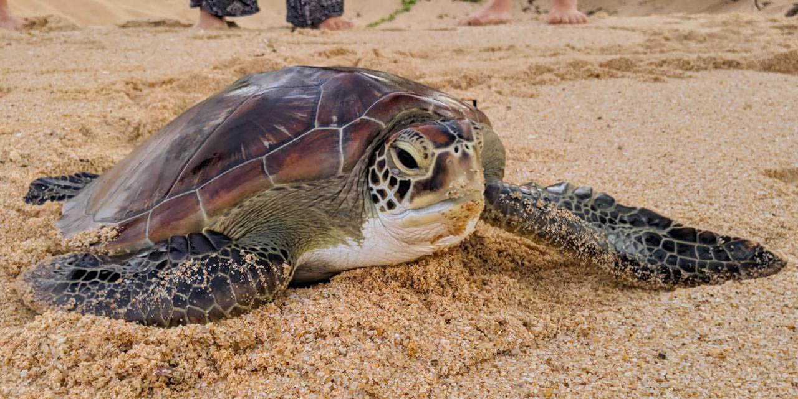
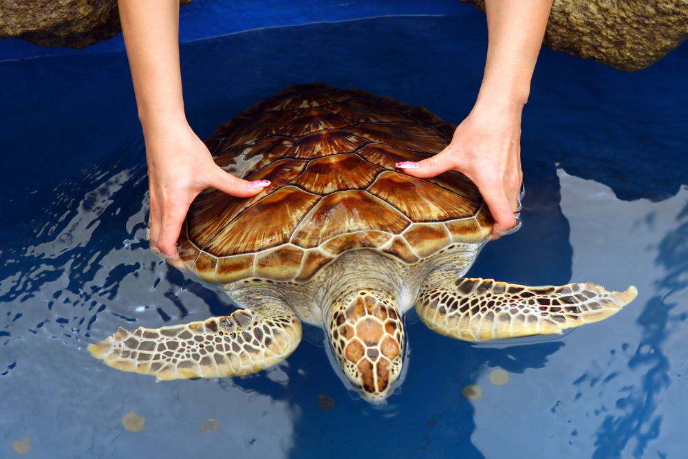
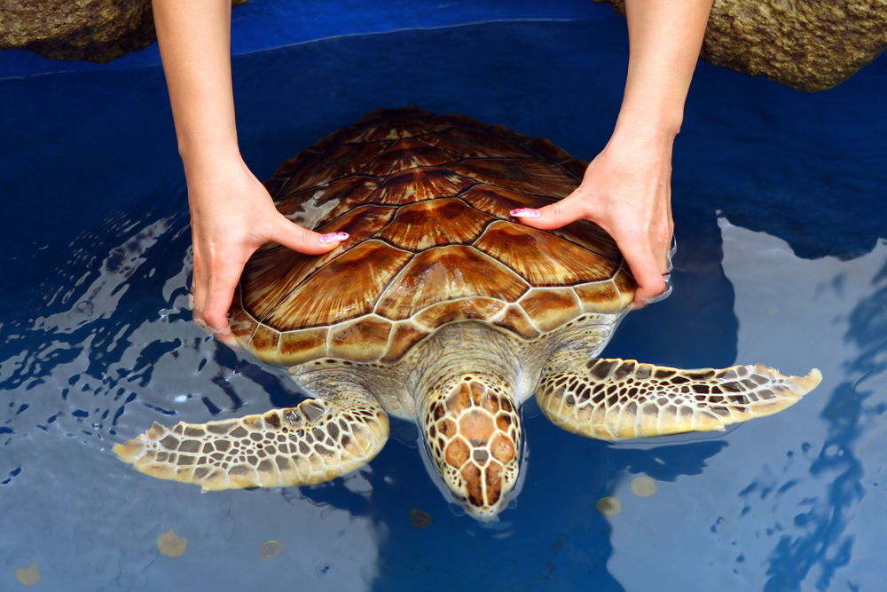

Turtle Categories Found In Sri Lanka
Green Turtle
The Green turtle is the most commonly found turtle in Sri Lanka and one of the largest known sea turtles. It can be identified from its flattened body covered by a tear shaped shell that is blackish grey in colour, a smaller head than the loggerhead turtle and a pair of large paddle like flippers. The adult turtle is relatively large weighing between 68 and 190 kg with exceptional species weighing as much as 315 kg. It gets its name from the green colour fat found in the layers under its shell. They are found mainly thriving in the tropical waters of the ocean, feeding only on marine vegetation such as algae and sea grass, returning to the shore to lay eggs.

Olive RIdley

The Olive Ridley Sea turtle is found existing in the warm waters of the Indian Ocean. It is relatively small in size with a black heart shaped upper exoskeleton that turns olive green in adulthood. It averages 60-70 centimeters in length, with a weight not exceeding 50kg. The Olive Ridley, known to be the sea turtle found most abundantly comes ashore in a unique phenomenon known as arribada where large groups of females come all at once to nest. The Olive Ridley feeds mainly on jellyfish, shrimp, mollusks and fish and has an average lifespan of 50 years
Leatherback

One of the largest turtle living, and is the 4th most heaviest turtle in the modern day. It has a large Greyish-black teardrop shaped body covered with skin and oily flesh. It grows up to 2 feet long and it weighs more than 900 kgs. It mainly feeds on jelly fish and other small sea animals.
Hawksbill

Hawksbill turtle, a rare endangered species with reddish orange streaks and dark golden brown color, is found in shallow lagoons and coral reefs. Named for its large head and hard upper shell.
Loggerhead
 

Loogerhead turtles are found in deep ocean water, bays, lagoons, and saline marshes. They have a reddish brown top shell and weigh around 113 kg. They are predators, consuming invertebrates from the ocean. Their lifespan is around 50 years.
| Species | Scientific Name | Average Lifespan | Habitat | Conservation Status |
|---|---|---|---|---|
| Green turtle | Chelonia mydas | 80 yrs | Oceans and seagrass beds | Endangered |
| Olive ridley | Lepidochelys olivacea | 50-60 yrs | Oceans and coastal areas | Vulnerable |
| Leatherback | Dermochelys coriacea | 30-50 yrs | Oceans and pelagic zones | Vulnerable |
| Hawksbill | Eretmochelys imbricata | 30-50 yrs | Tropical coral reefs and coastal areas | Critically Endangered |
| Loggerhead | Caretta caretta | 40-60 yrs | Oceans and coastal waters | Vulnerable |